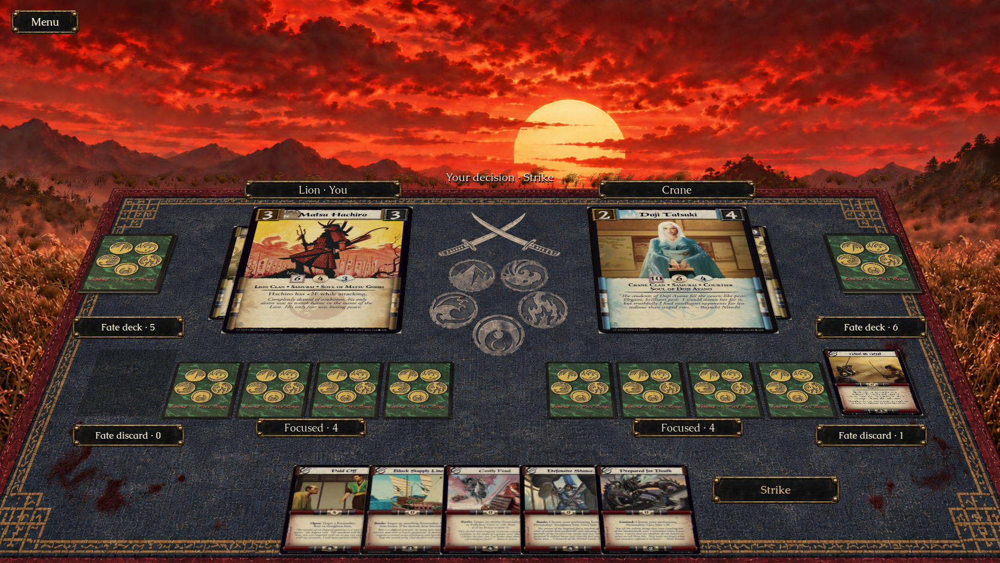
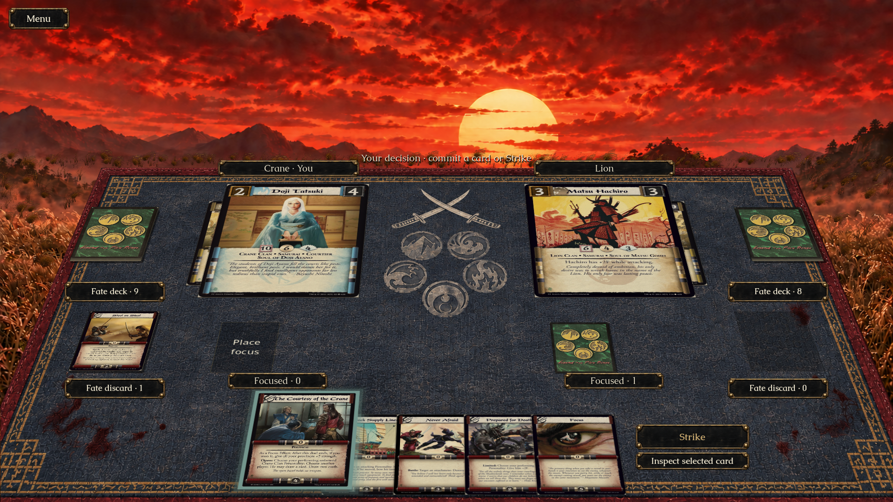
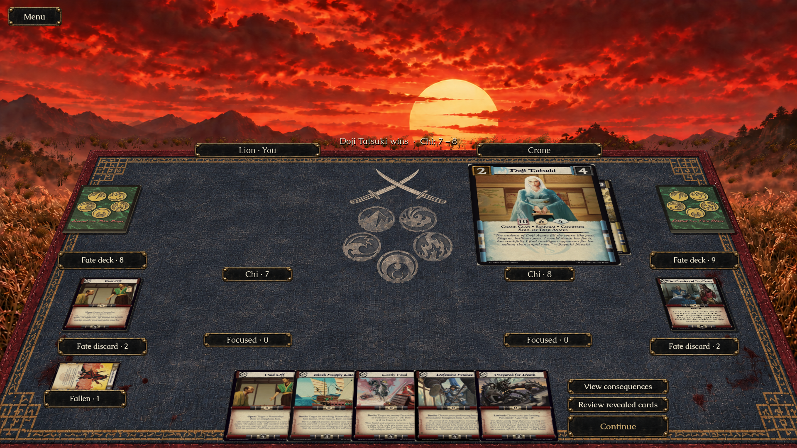
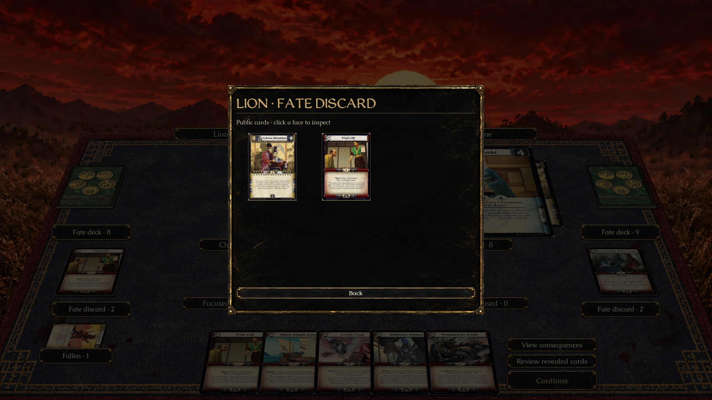
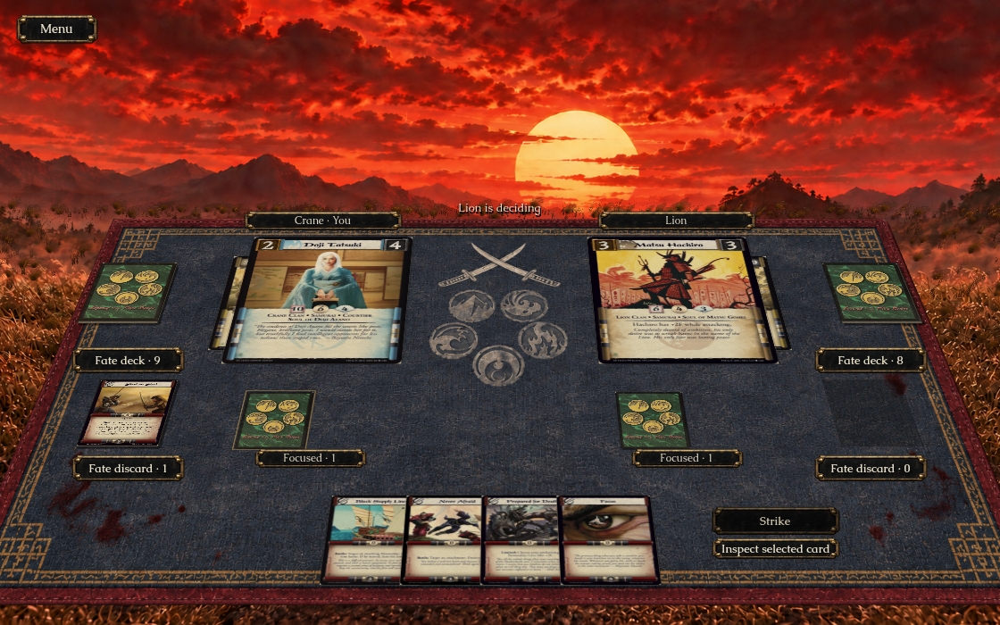

Approved direction beside the native Godot build, at equal image width. The native capture shows the crowded four-focus scenario from Lion’s seat; original period scans, public counts and legal decisions remain live. The plaque texture is derived from approved B. The scene is not pixel-identical: existing 2.5D perspective, original card typography, generated scenario piles and the animated matte remain.

Placement is on the mat. Each side has fixed Fate deck/discard piles and separate focus slots; the first commitments fill beneath the champion. Fate discards, fallen Personalities and removed cards have distinct inspection views. The public discard preview is representative, since the current view does not expose ordered pile tops.




Machine-readable validation · Local Mac graphical checks; no Windows graphical or human rules acceptance claim. Grass/cloud polish remains a separate acceptance track.